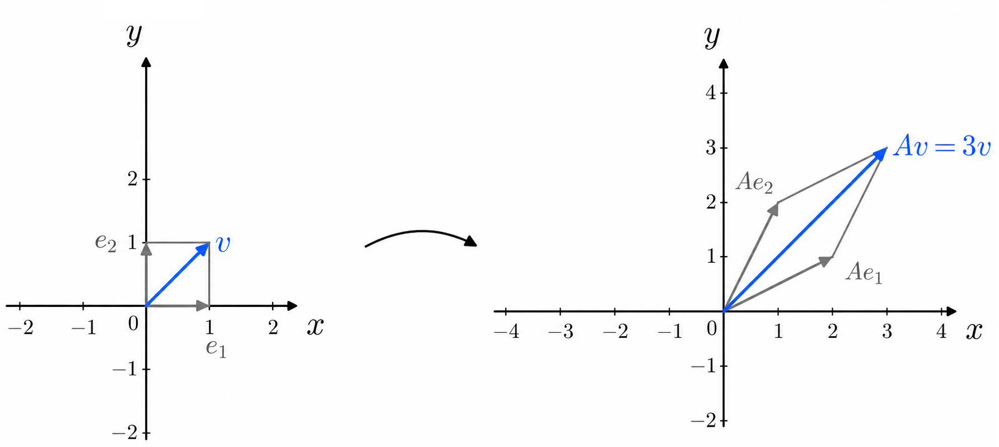

11 ערכים עצמיים, וקטורים עצמיים ולכסון
11.1 מוטיבציה והגדרות
מטרתנו בפרק זה: בהינתן ה"ל \(T:\mathbb{F}^n\to\mathbb{F}^n\), נרצה למצוא בסיס סדור \(B\) ל- \(\mathbb{F}^n\) כך ש- \([T]_B^B\) אלכסונית. מה היתרון של מטריצות אלכסוניות? אחד מהם קשור לחישוב חזקה עם מעריך גבוה, שעלול להיות ארוך למטריצות לא אלכסוניות. לעומת זאת, נניח כי \[.[T]_B^B=\begin{pmatrix} a_1 & 0 & \cdots & 0 \\ 0 & a_2 & \cdots & 0 \\ \vdots & \vdots & \ddots & \vdots \\ 0 & 0 & \cdots & a_n \end{pmatrix}\] המשמעות של חזקה עם מעריך \(k\) היא מכפלה שבה המטריצה מופיעה \(k\) פעמים. מאלכסוניות נקבל שבחישוב החזקה כל איבר על האלכסון הראשי מופיע \(k\) פעמים במכפלה (וכל שאר האיברים נשארים \(0\)). כך נקבל \[.([T]_B^B)^k=\begin{pmatrix} a_1^k & 0 & \cdots & 0 \\ 0 & a_2^k & \cdots & 0 \\ \vdots & \vdots & \cdots & \vdots \\ 0 & 0 & \cdots & a_n^k \end{pmatrix}\] נשים לב שחזקה זו היא גם \([T^k]_B^B\) כאשר הכוונה בחזקה \(T^k\) היא הרכבה שבה \(T\) מופיעה \(k\) פעמים: \[T^k=T\underbrace{\circ\cdots\circ}_{k-1} T\] כאמור, חישוב של חזקה של מטריצה עלול להיות מסובך, אבל כאשר המטריצה אלכסונית החישוב פשוט. כך גם ניתן לפענח את החזקה של הה"ל המתאימה בדרך פשוטה.
התהליך של מציאת \(B\) כנ"ל נקרא לכסון. מהי האינטואיציה ההנדסית מאחוריו? בדרך כלל, מערכת לינארית מערבבת רכיבים. אבל יש כיוונים מיוחדים במרחב — הכיוונים העצמיים — שבהם המערכת פועלת בצורה "טהורה". המשמעות של כיוון עצמי: נכנסים בכיוון הזה ויוצאים באותו הכיוון (עד כדי סימן, כלומר ייתכן היפוך כיוון). במילים אחרות: אם מתחילים בדיוק בכיוון הזה, המערכת לא יוצרת ערבוב עם כיוונים אחרים. מה שכן עשוי להשתנות הוא האורך, כלומר יש כפל בסקלר.
העתקה לינארית כללית היא כמו מערכת שבה כל משתנה משפיע על כולם, כלומר יש ערבוב. משמעות הלכסון היא בחירת משתנים חדשים (צירופים לינאריים של המשתנים המקוריים) כך שעבורם המערכת מתנהגת כאילו היא מפוצלת לערוצים נפרדים, בלי ערבוב. הפיצול עוזר לנו להבין את המערכת יותר טוב, וזו המטרה הכללית של לכסון.
קודם כל, נבין את ההגדרה המדויקת של אבני הבניין של לכסון: ערכים עצמיים ווקטורים עצמיים. נעסוק רק במקרה של ה"ל \(T:\mathbb{F}^n\to\mathbb{F}^n\), אך נציין שההגדרה עבור \(T:V\to V\) דומה לכל מ"ו \(V\) נוצר סופית. המקרה של \(V=\mathbb{F}^n\) פשוט יותר כי מלכתחילה יש מטריצה ריבועית \(A\in\mathbb{M}_{n\times n}(\mathbb{F})\) עבורה \(T=T_A\), ולכן ההגדרה תתייחס אל \(A\) באופן מפורש.
תהי \(A\in\mathbb{M}_{n\times n}(\mathbb{F})\).
\(\lambda\in\mathbb{F}\) נקרא ערך עצמי (ע"ע) של \(A\) אם קיים \(\underline{0}\neq v\in\mathbb{F}^n\) כך ש- \[.Av=\lambda v\] \(v\) כנ"ל נקרא וקטור עצמי (ו"ע) של \(A\) המתאים ל- \(\lambda\).
עבור ע"ע \(\lambda\in\mathbb{F}\) המרחב העצמי שלו הוא \[.V_{\lambda}=\Set{v\in\mathbb{F}^n|Av=\lambda v}\] מדובר על קבוצת כל הו"ע המתאימים לע"ע \(\lambda\) כולל וקטור האפס (שלא נחשב ו"ע).

Remark. כל ע"ע של \(A\) גם נקרא ע"ע של \(T_A\), אך נתמקד במטריצות. אכן, לפי הגדרת \(T_A\) מתקיים \(T_Av=Av\). מכאן שלכל \(\lambda\in\mathbb{F},v\neq\underline{0}\) מתקיים \[.T_Av=\lambda v \iff Av=\lambda v\] לכן, גם אם ההקשר הוא ה"ל ניתן לעבור למטריצה המתאימה ולעשות את החישובים עליה כדי למצוא את הע"ע ואת המרחבים העצמיים המתאימים. נוח להתמקד במטריצות מלכתחילה וכך נעשה.
Example 11.1 עבור \[A=\begin{pmatrix} 2 & 1 \\ 1 & 2 \end{pmatrix}\] נראה כי \(\lambda_1=1,\ \lambda_2=3\) הם ע"ע. אכן, מתקיים: \[\begin{aligned} \begin{pmatrix} 2 & 1 \\ 1 & 2 \end{pmatrix}\begin{pmatrix}1\\-1\end{pmatrix}&=\begin{pmatrix}1\\-1\end{pmatrix}=1\cdot\begin{pmatrix}1\\-1\end{pmatrix} \\ \begin{pmatrix} 2 & 1 \\ 1 & 2 \end{pmatrix}\begin{pmatrix}1\\1\end{pmatrix}&=\begin{pmatrix}3\\3\end{pmatrix}=3\cdot\begin{pmatrix}1\\1\end{pmatrix} \end{aligned}\] זה מראה כי \(\begin{pmatrix}1\\-1\end{pmatrix}\) הוא ו"ע המתאים לע"ע \(\lambda_1=1\), ואילו \(\begin{pmatrix}1\\1\end{pmatrix}\) הוא ו"ע המתאים לע"ע \(\lambda_2=3\). לעומת זאת, \(\begin{pmatrix}1\\0\end{pmatrix}\) אינו ו"ע כי לכל \(\lambda\in\mathbb{F}\) מתקיים \[.\begin{pmatrix} 2 & 1 \\ 1 & 2 \end{pmatrix}\begin{pmatrix}1\\0\end{pmatrix}=\begin{pmatrix}2\\1\end{pmatrix}\neq \lambda\cdot\begin{pmatrix}1\\0\end{pmatrix}\]
Proposition 11.1 תהי \(A\in\mathbb{M}_{n\times n}(\mathbb{F})\) ויהי \(\lambda\in\mathbb{F}\) (לא בהכרח ע"ע). אז מתקיים:
\[V_{\lambda}=\mathop{\mathrm{N}}(\lambda I_n-A)\] בפרט, \(V_{\lambda}\) הוא תת-מרחב של \(\mathbb{F}^n\).
\[\det(\lambda I_n-A)=0 \iff V_{\lambda}\neq\Set{\underline{0}} \iff \text{$\lambda$ הוא ע"ע של $A$}\]
Proof.
לכל \(v\in\mathbb{F}^n\) מתקיים: \[\begin{aligned} v\in V_{\lambda} &\iff Av=\lambda v \iff \lambda v-Av=\underline{0} \\ &\iff (\lambda I_n-A)v=\underline{0} \iff v\in\mathop{\mathrm{N}}(\lambda I_n-A) \end{aligned}\] קיבלנו כי \(V_{\lambda}=\mathop{\mathrm{N}}(\lambda I_n-A)\). בפרט, זהו תת-מרחב של \(\mathbb{F}^n\).
לפי ההגדרה, \(\lambda\) הוא ע"ע של \(A\) אם ורק אם קיים \(v\neq\underline{0}\) כך ש- \(Av=\lambda v\). התנאי האחרון בדיוק שקול לתנאי \(V_{\lambda}\neq\Set{\underline{0}}\). לפי הסעיף הקודם ומשפט 6.75 עבור המטריצה \(\lambda I_n-A\), מתקיים: \[\begin{aligned} V_{\lambda}\neq\Set{\underline{0}} &\iff \mathop{\mathrm{N}}(\lambda I_n-A)\neq {\underline{0}} \iff \text{אינה הפיכה} \, \lambda I_n-A \\ &\iff \det(\lambda I_n-A)=0 \end{aligned}\]
◻
נחזור לדוגמה 11.3. הראינו כי \(\lambda_1=1,\,\lambda_2=3\) הם ע"ע של \(A\), אבל איך ניתן היה למצוא אותם? ראשית נחשב את הדטרמיננטה של המטריצה \(\lambda I_2-A\):
\[\det(\lambda I_2-A)=\det\begin{pmatrix} \lambda-2 & -1 \\ -1 & \lambda -2 \end{pmatrix}=(\lambda-2)^2-(-1)^2=(\lambda-1)(\lambda-3)\]
הע"ע הם השורשים של המשוואה הריבועית הבאה:
\[(\lambda-1)(\lambda-3)=0\]
כצפוי, מדובר על \(\lambda_1=1,\,\lambda_2=3\) בלבד. נתחיל מהע"ע \(\lambda_1=1\): איך נמצא וקטורים עצמיים? נפתור את הממ"ל המתאימה:
\[V_1=\mathop{\mathrm{N}}(1\cdot I_2-A)=\mathop{\mathrm{N}}\begin{pmatrix} -1 & -1 \\ -1 & -1 \end{pmatrix}=\mathop{\mathrm{N}}\begin{pmatrix} 1 & 1 \\ 0 & 0 \end{pmatrix}=\mathop{\mathrm{Span}}\left(\begin{pmatrix}1\\-1\end{pmatrix}\right)\] זה מראה כי \(\begin{pmatrix}1\\-1\end{pmatrix}\) הוא ו"ע המתאים לע"ע \(\lambda_1=1\). יותר מכך, כל כפולה בסקלר שלו היא גם ו"ע המתאים לאותו ע"ע (חוץ מוקטור האפס שלא נחשב ו"ע לפי ההגדרה). באופן דומה:
\[V_3=\mathop{\mathrm{N}}(3\cdot I_2-A)=\mathop{\mathrm{N}}\begin{pmatrix} 1 & -1 \\ -1 & 1 \end{pmatrix}=\mathop{\mathrm{N}}\begin{pmatrix} 1 & -1 \\ 0 & 0 \end{pmatrix}=\mathop{\mathrm{Span}}\left(\begin{pmatrix}1\\1\end{pmatrix}\right)\] לכן, \(\begin{pmatrix}1\\1\end{pmatrix}\) הוא ו"ע של \(A\) המתאים לע"ע \(\lambda_2=3\). גם כאן כל כפולה בסקלר (חוץ מוקטור האפס) היא גם גם ו"ע.
תהי \(A\in\mathbb{M}_{n\times n}(\mathbb{F})\). הוכיחו כי \(0\) הוא ע"ע של \(A\) אם ורק אם \(A\) אינה הפיכה.
Proof. לפי משפט 6.75 מתקיים: \[\text{$A$ אינה הפיכה} \iff \exists\thinspace v\neq\underline{0}\,:\,Av=\underline{0}=0\cdot v\iff \text{$0$ הוא ע"ע של $A$}\] ◻
תהי \(A\in\mathbb{M}_{n\times n}(\mathbb{F})\). נגדיר \(p_A(x)=\det(x I_n-A)\) ונקרא לו הפולינום האופייני של \(A\).
Remark. זהו פולינום ממעלה \(n\) כי בחישוב הדטרמיננטה מופיע סכום (עם סימנים מתחלפים) של מכפלות של איברי המטריצה. יש בדיוק מכפלה אחת בפיתוח שהיא ממעלה \(n\), והיא זו המתאימה לאיברי האלכסון הראשי. לפי טענה 11.4, שורשי הפולינום הם בדיוק הע"ע של \(A\). נדגיש שהם לא בהכרח ממשיים גם אם \(\mathbb{F}=\mathbb{R}\).
אין חשיבות לאות, אבל מקובל להשתמש ב- \(x\) עבור המשתנה של הפולינום וב- \(\lambda\) עבור הע"ע.
Example 11.2 עבור \[A=\begin{pmatrix} 0 & -1 \\ 1 & 0 \end{pmatrix}\] מתקיים \[.p_A(x)=\det(x I_2-A)=\det\begin{pmatrix} x & 1 \\ -1 & x \end{pmatrix}=x^2+1\] הע"ע הם \(\lambda_{1,2}=\pm i\). אם כן, הע"ע אינם ממשיים וניתן למצוא וקטורים עצמיים רק ב- \(\mathbb{C}^2\). נמצא את המרחבים העצמיים:
\[\begin{aligned} V_i&=\mathop{\mathrm{N}}(iI_2-A)=\mathop{\mathrm{N}}\begin{pmatrix} i & 1 \\ -1 & i \end{pmatrix}=\mathop{\mathrm{N}}\begin{pmatrix} i & 1 \\ 0 & 0 \end{pmatrix}=\mathop{\mathrm{Span}}\left(\begin{pmatrix}1\\-i\end{pmatrix}\right)\\ V_{-i}&=\mathop{\mathrm{N}}(-iI_2-A)=\mathop{\mathrm{N}}\begin{pmatrix} -i & 1 \\ -1 & -i \end{pmatrix}=\mathop{\mathrm{N}}\begin{pmatrix} -i & 1 \\ 0 & 0 \end{pmatrix}=\mathop{\mathrm{Span}}\left(\begin{pmatrix}1\\i\end{pmatrix}\right) \end{aligned}\]
מצאו את כל הע"ע ואת המרחבים העצמיים המתאימים עבור \[.A=\begin{pmatrix} 4 & 0 & 3 \\ 0 & 3 & 0 \\ 1 & 0 & 2 \end{pmatrix}\]
נמצא את הפולינום האופייני ע"י פיתוח הדטרמיננטה לפי השורה השנייה (אפשר גם לפי העמודה השנייה). זה יקל על החישוב ובמיוחד על הפירוק לגורמים של הפולינום (מה שנחוץ כדי למצוא את השורשים בהעדר נוסחה). נקבל: \[\begin{aligned} p_A(x)&=\det(xI_3-A)=\det\begin{pmatrix} x-4 & 0 & -3 \\ 0 & x-3 & 0 \\ -1 & 0 & x-2 \end{pmatrix}\\ &=(x-3)\det\begin{pmatrix} x-4 & -3 \\ -1 & x-2 \end{pmatrix}=(x-3)(x^2-6x+8-3)\\ &=(x-1)(x-3)(x-5) \end{aligned}\]
קיבלנו את הע"ע הבאים: \(\lambda_1=1,\,\lambda_2=3,\,\lambda_3=5\). נעבור למרחבים עצמיים: \[\begin{aligned} V_1&=\mathop{\mathrm{N}}(I_3-A)=\mathop{\mathrm{N}}\begin{pmatrix} -3 & 0 & -3 \\ 0 & -2 & 0 \\ -1 & 0 & -1 \end{pmatrix}=\mathop{\mathrm{N}}\begin{pmatrix} 1 & 0 & 1 \\ 0 & 1 & 0 \\ 0 & 0 & 0 \end{pmatrix}=\mathop{\mathrm{Span}}\left(\begin{pmatrix}1\\0\\-1\end{pmatrix}\right)\\ V_3&=\mathop{\mathrm{N}}(3I_3-A)=\mathop{\mathrm{N}}\begin{pmatrix} -1 & 0 & -3 \\ 0 & 0 & 0 \\ -1 & 0 & 1 \end{pmatrix}=\mathop{\mathrm{N}}\begin{pmatrix} 1 & 0 & 0 \\ 0 & 0 & 1 \\ 0 & 0 & 0 \end{pmatrix}=\mathop{\mathrm{Span}}\left(\begin{pmatrix}0\\1\\0\end{pmatrix}\right)\\ V_5&=\mathop{\mathrm{N}}(5I_3-A)=\mathop{\mathrm{N}}\begin{pmatrix} 1 & 0 & -3 \\ 0 & 2 & 0 \\ -1 & 0 & 3 \end{pmatrix}=\mathop{\mathrm{N}}\begin{pmatrix} 1 & 0 & -3 \\ 0 & 1 & 0 \\ 0 & 0 & 0 \end{pmatrix}=\mathop{\mathrm{Span}}\left(\begin{pmatrix}3\\0\\1\end{pmatrix}\right) \end{aligned}\]
מטריצות \(A,B\in\mathbb{M}_{n\times n}(\mathbb{F})\) נקראות דומות אם קיימת \(P\in\mathbb{M}_{n\times n}(\mathbb{F})\) הפיכה כך ש- \[.A=PBP^{-1}\]
Remark. באותה המידה אפשר לכתוב \[.B=P^{-1}AP\] כלומר: \(A\) דומה ל- \(B\) אם ורק אם \(B\) דומה ל- \(A\), כפי שהיינו מצפים מהמילה "דמיון".
להוכיח ששתי מטריצות נתונות הן דומות זו משימה לא טריוויאלית. איך נמצא את \(P\)? נגיע לכך בהמשך דרך לכסון (הקשור לו"ע וע"ע), אך בינתיים נראה דוגמה לבדיקת הדמיון בהינתן \(P\).
Example 11.3 המטריצות \[A=\begin{pmatrix} 2 & -1 \\ -1 & 2 \end{pmatrix},\quad B=\begin{pmatrix} 3 & 0 \\ -1 & 1 \end{pmatrix}\] הן דומות. נראה זאת: עבור המטריצה ההפיכה \[P=\begin{pmatrix} 1 & 1 \\ 0 & 1 \end{pmatrix}\] מתקיים \[.A=PBP^{-1}=\begin{pmatrix} 1 & 1 \\ 0 & 1 \end{pmatrix}\begin{pmatrix} 3 & 0 \\ -1 & 1 \end{pmatrix}\begin{pmatrix} 1 & -1 \\ 0 & 1 \end{pmatrix}\]
\(A\in\mathbb{M}_{n\times n}(\mathbb{F})\) נקראת לכסינה אם היא דומה למטריצה אלכסונית \(D\in\mathbb{M}_{n\times n}(\mathbb{F})\), כלומר קיימת \(P\in\mathbb{M}_{n\times n}(\mathbb{F})\) הפיכה כך ש- \[.A=PDP^{-1}\]
המטריצה \[A=\begin{pmatrix} 1 & 0 \\ 1 & 2 \end{pmatrix}\] היא אלכסונית כי עבור המטריצות \[D=\begin{pmatrix} 1 & 0 \\ 0 & 2 \end{pmatrix},\quad P=\begin{pmatrix} 1 & 0 \\ -1 & 1 \end{pmatrix}\] מתקיים \[.PDP^{-1}=\begin{pmatrix} 1 & 0 \\ -1 & 1 \end{pmatrix}\begin{pmatrix} 1 & 0 \\ 0 & 2 \end{pmatrix}\begin{pmatrix} 1 & 0 \\ 1 & 1 \end{pmatrix}=A\]
בדוגמה 11.13 ראינו כי \[A=\begin{pmatrix} 2 & -1 \\ -1 & 2 \end{pmatrix},\quad B=\begin{pmatrix} 3 & 0 \\ -1 & 1 \end{pmatrix}\] דומות זו לזו לפי הקשר \[A=PBP^{-1}\] עבור \[.P=\begin{pmatrix} 1 & 1 \\ 0 & 1 \end{pmatrix}\] כעת נראה ששתיהן לכסינות, ולמעשה הן דומות למטריצה האלכסונית הבאה: \[D=\begin{pmatrix} 3 & 0 \\ 0 & 1 \end{pmatrix}\] עבור \[P_2=\begin{pmatrix} 2 & 0 \\ -1 & 1 \end{pmatrix}\] מתקיים \[.P_2DP_2^{-1}=\begin{pmatrix} 2 & 0 \\ -1 & 1 \end{pmatrix}\begin{pmatrix} 3 & 0 \\ 0 & 1 \end{pmatrix}\begin{pmatrix} \frac{1}{2} & 0 \\ \frac{1}{2} & 1 \end{pmatrix}=\begin{pmatrix} 3 & 0 \\ -1 & 1 \end{pmatrix}=B\] קיבלנו כי \(B\) לכסינה. כעת נציב \(B=P_2DP_2^{-1}\) בקשר הדמיון בין \(A\) ל- \(B\) ונקבל \[.A=PBP^{-1}=P(P_2DP_2^{-1})P^{-1}=(PP_2)D(PP_2)^{-1}\] זה מראה כי \(A\) גם לכסינה, ומתקיים \(A=P_1DP_1^{-1}\) כאשר \(P_1=PP_2\) (מטריצה הפיכה כמכפלה של מטריצות הפיכות). יתר על כן, למטריצות \(A,B\) יש בדיוק אותם ע"ע, והם מופיעים לאורך האלכסון הראשי של \(D\): \(\lambda_1=3,\lambda_2=1\). יחד עם זאת, המרחבים העצמיים שונים. עבור \(A\) העמודות של \(PP_2\) הן ו"ע, כלומר \(\begin{pmatrix}1\\-1\end{pmatrix},\begin{pmatrix}1\\1\end{pmatrix}\) בהתאמה ל- \(\lambda_1=3,\lambda_2=1\). עבור \(B\) העמודות של \(P_2\) הן ו"ע, וקל לראות כי \[.\begin{pmatrix}2\\-1\end{pmatrix}\notin\mathop{\mathrm{Span}}\left(\begin{pmatrix}1\\-1\end{pmatrix}\right),\quad \begin{pmatrix}0\\1\end{pmatrix}\notin\mathop{\mathrm{Span}}\left(\begin{pmatrix}1\\1\end{pmatrix}\right)\]
הדוגמה לעיל מעידה על תכונה כללית של יחס הדמיון בין מטריצות: טרנזיטיביות. הכוונה המדויקת תובהר בתרגיל הבא:
יהיו \(A,B,C\in\mathbb{M}_{n\times n}(\mathbb{F})\) כך ש- \(A\) דומה ל- \(B\) ו- \(B\) דומה ל- \(C\). אז \(A\) דומה ל- \(C\).
מהנתון נובע שקיימות \(P,Q\in\mathbb{M}_{n\times n}(\mathbb{F})\) כך ש- \[.A=PBP^{-1},\quad B=QCQ^{-1}\] נציב את המשוואה הימנית באגף ימין של המשוואה השמאלית ונקבל \[.A=P(QCQ^{-1})P^{-1}=(PQ)C(PQ)^{-1}\] \(PQ\) הפיכה כמכפלה של מטריצות הפיכות, ולכן המשוואה לעיל מראה כי \(A\) דומה ל- \(C\) כנדרש.
אם כן, לאור התרגיל האחרון אפשר כבר להבין ששתי מטריצות לכסינות הן דומות זו לזו אם הן דומות לאותה מטריצה אלכסונית. בכיוון השני, נוכיח שהפולינומים האופייניים והע"ע של מטריצות דומות בהכרח שווים.
Proposition 11.2 יהיו \(A,B\in\mathbb{M}_{n\times n}(\mathbb{F})\) דומות. אז מתקיים:
לכל \(\lambda\in\mathbb{F}\) המטריצות \[\lambda I_n-A,\,\lambda I_n-B\] דומות.
מתקיים \[.p_A(x)=p_B(x)\]
ל- \(A,B\) יש אותם ע"ע.
לפי הנתון, קיימת \(P\in\mathbb{M}_{n\times n}(\mathbb{F})\) הפיכה כך ש- \[.A=PBP^{-1}\]
יהי \(\lambda\in\mathbb{F}\). מתקיים \[.P(\lambda I_n-B)P^{-1}=\lambda PP^{-1}-PBP^{-1}=\lambda I_n-A\] לכן, שתי המטריצות דומות.
זו מסקנה מהסעיף הקודם ותרגיל 7.19. דטרמיננטות של מטריצות דומות הן שוות, ולכן \[.p_A(x)=\det(xI_n-A)=\det(xI_n-B)=p_B(x)\]
לפי הסעיף הקודם וטענה 11.4, נובע כי \[.\text{$\lambda$ הוא ע"ע של $A$} \iff p_A(\lambda)=0 \iff p_B(\lambda)=0 \iff \text{$\lambda$ הוא ע"ע של $B$}\] כלומר: ל- \(A,B\) יש אותם ע"ע.
11.2 משפט הלכסון ויישומו
מהו הקשר בין לכסון לבין ערכים עצמיים? הם מופיעים על האלכסון הראשי של המטריצה האלכסונית \(D\). ומה לגבי הוקטורים העצמיים? הם העמודות של \(P\). זה הרעיון של המשפט הבא, שנקרא לו משפט הלכסון.
Theorem 11.1 \(A\in\mathbb{M}_{n\times n}(\mathbb{F})\) היא לכסינה אם ורק אם קיים ל- \(\mathbb{F}^n\) בסיס \(B=\Set{v_1,...,v_n}\) המורכב מוקטורים עצמיים של \(A\).
Proof. בכיוון הראשון, נניח כי קיים ל- \(\mathbb{F}^n\) בסיס \(B=\Set{v_1,...,v_n}\) של וקטורים עצמיים המתאימים לע"ע \(\lambda_1,...,\lambda_n\in\mathbb{F}\). ליתר דיוק: \[\forall 1\leq i\leq n\,:\,Av_i=\lambda_iv_i\] נסתכל על \(T_A:\mathbb{F}^n\to\mathbb{F}^n\) ונשים לב כי \[.D=\begin{pmatrix} \big| & \big| & & \big| \\ [\lambda_1 v_1]_B & [\lambda_2 v_2]_B & \cdots & [\lambda_n v_n]_B \\ \big| & \big| & & \big| \end{pmatrix} = \begin{pmatrix} \lambda_1 & 0 & \cdots & 0 \\ 0 & \lambda_2 & \cdots & 0 \\ \vdots & \vdots & \ddots & \vdots \\ 0 & 0 & \cdots & \lambda_n \end{pmatrix}\] זו מטריצה אלכסונית. נשתמש במסקנה 10.65: \[A=[T_A]_E^E=[I]_E^B[T_A]_B^B([I]_E^B)^{-1}\] נסמן \(P=[I]_E^B,\,D=[T]_B^B\). קיבלנו כי \(A=PDP^{-1}\) בנוסף, מתקיים \[.P=[I]_E^B= \left( \begin{array}{cccc} \big| & \big| & & \big| \\ v_1 & v_2 & \cdots & v_n \\ \big| & \big| & & \big| \end{array} \right)\] זו מטריצה הפיכה כי העמודות מהוות בסיס ל- \(\mathbb{F}^n\). לסיכום, הוכחנו כי \(A\) לכסינה, הע"ע שלה מופיעים לאורך האלכסון הראשי של \(D\), והוקטורים העצמיים הם עמודות \(P\). יש דרך נוספת לראות זאת בלי שימוש בה"ל: \[\begin{aligned} AP&=A\left( \begin{array}{cccc} \big| & \big| & & \big| \\ v_1 & v_2 & \cdots & v_n \\ \big| & \big| & & \big| \end{array} \right)=\left( \begin{array}{cccc} \big| & \big| & & \big| \\ Av_1 & Av_2 & \cdots & Av_n \\ \big| & \big| & & \big| \end{array} \right)\\ &=\left( \begin{array}{cccc} \big| & \big| & & \big| \\ \lambda_1v_1 & \lambda_2v_2 & \cdots & \lambda_nv_n \\ \big| & \big| & & \big| \end{array} \right)=\left( \begin{array}{cccc} \big| & \big| & & \big| \\ v_1 & v_2 & \cdots & v_n \\ \big| & \big| & & \big| \end{array} \right)\begin{pmatrix} \lambda_1 & 0 & \cdots & 0 \\ 0 & \lambda_2 & \cdots & 0 \\ \vdots & \vdots & \ddots & \vdots \\ 0 & 0 & \cdots & \lambda_n \end{pmatrix}\\ &=PD \end{aligned}\] נכפיל מימין ב- \(P^{-1}\) ונקבל \(A=PDP^{-1}\), שוב.
בכיוון השני, נניח כי \(A\) לכסינה ולכן קיימות \(P,D\in\mathbb{M}_{n\times n}(\mathbb{F})\) כך ש- \(P\) הפיכה, \(D\) אלכסונית ומתקיים \[.A=PDP^{-1}\] נסמן ב- \(v_1,...,v_n\) את עמודות \(A\) (לפי הסדר) ונסתכל על הבסיס הסדור \(B=\Set{v_1,...,v_n}\). זהו בסיס ל- \(\mathbb{F}^n\) כי \(P\) הפיכה. מתקיים \[.P=\left( \begin{array}{cccc} \big| & \big| & & \big| \\ v_1 & v_2 & \cdots & v_n \\ \big| & \big| & & \big| \end{array} \right)=[I]_E^B\] מההנחה \(A=PDP^{-1}\) וטענה 10.64 נובע כי \[.D=P^{-1}AP=([I]_E^B)^{-1}A[I]_E^B=[I]_B^E[T_A]_E^E([I]_B^E)^{-1}=[T_A]_B^B\] נסמן \[,D=\begin{pmatrix} \lambda_1 & 0 & \cdots & 0 \\ 0 & \lambda_2 &\cdots & 0 \\ \vdots & \vdots & \ddots & \vdots \\ 0 & 0 & \cdots & \lambda_n \end{pmatrix}\] ונקבל \[.\begin{pmatrix} \big| & \big| & & \big| \\ [Av_1]_B & [Av_2]_B & \cdots & [Av_n]_B \\ \big| & \big| & & \big| \end{pmatrix} = \begin{pmatrix} \lambda_1 & 0 & \cdots & 0 \\ 0 & \lambda_2 & \cdots & 0 \\ \vdots & \vdots & \ddots & \vdots \\ 0 & 0 & \cdots & \lambda_n \end{pmatrix}\] מכאן נובע כי לכל \(1\leq i \leq n\) מתקיים \[.Av_i=\lambda_iv_i\] בפרט, \(B=\Set{v_1,...,v_n}\) הוא בסיס ל- \(\mathbb{F}^n\) המורכב מוקטורים עצמיים של \(A\). ◻
אם קיים בסיס של וקטורים עצמיים ל- \(\mathbb{F}^n\), איך נמצא אותו? הרעיון הוא קודם כל למצוא בסיס לכל מרחב עצמי, ואחר כך לקחת איחוד של הבסיסים האלה. אבל מה מבטיח שנקבל בסיס בדרך זו? נוכיח את הטענה הבאה ואחר כך נקבל תשובה כמסקנה.
Proposition 11.3 תהי \(A\in\mathbb{M}_{n\times n}(\mathbb{F})\). נניח כי \(v_1,...,v_k\) מתאימים לע"ע שונים \(\lambda_1,...,\lambda_k\in\mathbb{F}\). אז בהכרח \(\Set{v_1,...,v_k}\) בת"ל.
Proof. נניח בשלילה כי \(\Set{v_1,...,v_k}\) ת"ל. לפי טענה 8.49 קיים \(2\leq i\leq k\) מינימלי כך ש- \(v_i\in\mathop{\mathrm{Span}}(v_1,...,v_{i-1})\), כלומר קיימים \(\alpha_1,...,\alpha_{i-1}\in\mathbb{F}\) עבורם מתקיים
\[ .v_i=\alpha_1 v_1+...+\alpha_{i-1}v_{i-1} \tag{11.1}\]
נכפיל את שני אגפי משוואה 11.1 ב- \(A\) ונקבל
\[ .\lambda_i v_i=\alpha_1 \lambda_1 v_1+...+\alpha_{i-1}\lambda_{i-1}v_{i-1} \tag{11.2}\]
מצד שני, אפשר גם להכפיל את שני אגפי משוואה 11.1 ב- \(\lambda_i\) ולקבל
\[ .\lambda_i v_i=\alpha_1 \lambda_i v_1+...+\alpha_{i-1}\lambda_i v_{i-1} \tag{11.3}\]
לבסוף, נחסיר את משוואה 11.3 ממשוואה 11.2 ונקבל \[.\underline{0}=\alpha_1 (\lambda_1-\lambda_i) v_1+...+\alpha_{i-1}(\lambda_{i-1}-\lambda_i) v_{i-1}\] לפי משוואה 11.1 קיים \(2\leq j\leq i-1\) מקסימלי עבורו \(\alpha_j\neq 0\), כי אחרת \(v_i=\underline{0}\) וזו סתירה להגדרה של ו"ע. בנוסף, מתקיים \(\lambda_j-\lambda_i\neq 0\) כי הע"ע שונים. אם כן, נבודד את \(v_j\) מתוך המשוואה ונקבל \[.v_j\in\mathop{\mathrm{Span}}(v_1,...,v_{j-1})\] זו סתירה להנחת המינימליות של \(i\). לכן, בהכרח \(\Set{v_1,...,v_k}\) בת"ל. ◻
לכל ע"ע \(\lambda_i\in\mathbb{F}\) של \(A\), נסמן \(g_i=\dim(V_{\lambda_i})\) ונקרא לו הריבוי הגיאומטרי של הע"ע \(\lambda_i\).
Corollary 11.1 תהי \(A\in\mathbb{M}_{n\times n}(\mathbb{F})\) עם ע"ע שונים \(\lambda_1,...,\lambda_k\in\mathbb{F}\). לכל \(1\leq i\leq k\) נניח כי \[B_i=\Set{v_{i1},...,v_{ig_i}}\] היא בסיס למרחב העצמי \(V_{\lambda_i}\). אז האיחוד \[\Set{v_{11},...,v_{1g_1},...,v_{k1},...,v_{kg_k}}\] הוא קבוצה בת"ל.
Proof. יהיו \(\alpha_{11},...,\alpha_{1g_1},....,\alpha_{k1},...,\alpha_{kg_k}\in\mathbb{F}\) כך ש- \[.\alpha_{11} v_{11}+...+\alpha_{1g_1}v_{1g_1}+...+\alpha_{k1}v_{k1}+...+\alpha_{kg_k}v_{kg_k}=\underline{0}\] לכל \(1\leq i\leq k\) נסמן \[,w_i=\alpha_{i1}v_{i1}+...+\alpha_{ig_i}v_{ig_i}\in V_{\lambda_i}\] ולפי ההנחה נקבל \[.w_1+...+w_k=\underline{0}\]
לפי טענה 11.19, בהכרח מתקיים \(w_1=...=w_k=\underline{0}\) כי אחרת כל וקטור שאינו מתאפס הוא ו"ע, וכך מתקבל סכום של וקטורים בת"ל (ממרחבים עצמיים שונים) שמתאפס - סתירה. אבל לכל \(1\leq i\leq k\) הקבוצה \(B_i\) בת"ל, ולכן השוויון \(w_i=\underline{0}\) גורר \[.\alpha_{i1}=...=\alpha_{ig_i}=0\] לסיכום, כל הסקלרים מתאפסים ולכן איחוד הבסיסים הוא אכן קבוצה בת"ל. ◻
11.2.1 אלגוריתם הלכסון
נרצה לפעול לפי אלגוריתם כדי לקבוע האם מטריצה \(A\in\mathbb{M}_{n\times n}(\mathbb{F})\) היא לכסינה. בהנחה שנקבל תשובה חיובית, נרצה שהאלגוריתם יוביל אותנו למטריצות \(P,D\in\mathbb{M}_{n\times n}(\mathbb{F})\) עבורן מתקיים \[.A=PDP^{-1}\]
לפני שנתאר את האלגוריתם, יש צורך בהגדרת מספר נוסף הקשור לע"ע (בדומה לריבוי הגיאומטרי). כאן יש קשר לפירוק לגורמים של הפולינום האופייני:
המעריך \(a_i\) של \(x-\lambda_i\) בפיצול \[p_A(x)=(x-\lambda_1)^{a_1}\cdots(x-\lambda_i)^{a_i}\dots(x-\lambda_k)^{a_k}\] נקרא הריבוי האלגברי של הע"ע \(\lambda_i\).
Remark. \(p_A(x)\) הוא פולינום ממעלה \(n\), כי בפיתוח של \(\det(xI_n-A)\) מופיע \(x^n\) ולכל שאר האיברים יש מעריכים קטנים יותר כחזקות של \(x\). מצד שני, ניתן לחשב את המעלה לפי הפיצול לגורמים לינאריים. כך נקבל \[.\sum_{i=1}^k a_i=n\]
עבור \[A=\begin{pmatrix} 1 & 1 & 0 \\ 0 & 1 & 1 \\ 0 & 0 & 0 \end{pmatrix}\] מתקיים \(p_A(x)=x(x-1)^2\). הע"ע הם \(\lambda_1=0,\lambda_2=1\) והריבויים האלגבריים המתאימים הם \(a_1=1,a_2=2\) בהתאם למעריכים שמופיעים בפיצול.
האלגוריתם מבוסס על משפט הלכסון, טענה 11.4 ומסקנה 11.21. הוא מחולק לשלבים הבאים:
שלב 1: בודקים האם הפולינום האופייני \(p_A(x)\) מתפצל לגורמים לינאריים מעל \(\mathbb{F}\).
הכוונה בפיצול לגורמים לינאריים היא פירוק לגורמים מהצורה הבאה: \[p_A(x)=(x-\lambda_1)^{a_1}\cdots (x-\lambda_k)^{a_k}\] כאשר \(\lambda_1,...,\lambda_k\) הם שורשי \(p_A(x)\), כלומר \(p_A(\lambda_i)=0\) לכל \(1\leq i\leq k\). לפי טענה 11.4, אלה הע"ע של \(A\).
כל פולינום מתפצל לגורמים לינאריים מעל \(\mathbb{C}\) (לפי משפט שחורג מהקורס), אך לא בהכרח מעל \(\mathbb{R}\). במילים אחרות, ייתכן ש- \(A\) לכסינה מעל \(\mathbb{C}\) ולא מעל \(\mathbb{R}\). דוגמה 11.9 מראה שייתכן שלמטריצה ממשית יהיו ע"ע שאינם ממשיים, או באופן שקול: ייתכן שאין פיצול לגורמים לינאריים מעל \(\mathbb{R}\), ולכן היא אינה לכסינה מעל \(\mathbb{R}\). בהמשך נראה שהמטריצה מדוגמה זו היא אכן לכסינה מעל \(\mathbb{C}\) (שלב \(1\) עוד לא מבטיח לנו זאת).
שלב 2: מחשבים את הע"ע ובודקים אם לכל ע"ע \(\lambda_i\) מתקיים \(g_i=a_i\). עושים זאת ע"י מציאת בסיס ל- \(V_{\lambda_i}\).
בהנחה שהתשובה חיובית, לכל \(1\leq i\leq k\) נקבל בסיס ל- \(V_{\lambda_i}\) שמורכב מ- \(g_i\) וקטורים עצמיים: \[B_i=\Set{v_{i1},...,v_{ig_i}}\] ניקח איחוד שלהם ונקבל בסיס \(B\) לכל \(\mathbb{F}^n\): \[B=B_1\cup \cdots \cup B_k=\Set{v_{11},...,v_{1g_1},...,v_{k1},...,v_{kg_k}}\]
זהו בסיס לפי משפט "שלישי חינם" ומסקנה 11.21. נציין שמספר הוקטורים העצמיים ב- \(B\) הוא \(n\) כי מתקיים \[.\sum_{i=1}^k g_i=\sum_{i=1}^k a_i=n\]
שלב 3: הלכסון \(A=PDP^{-1}\) מתקבל עבור המטריצות הבאות: \[\begin{aligned} P&=\begin{pmatrix} \big| & \big| & \big| \\ v_{11} & \cdots & v_{kg_k} \\ \big| & \big| & \big| \end{pmatrix}\\ D&=\begin{pmatrix} \lambda_1 & \cdots & 0 \\ \vdots & \ddots & \vdots \\ 0 & \cdots & \lambda_k \end{pmatrix} \end{aligned}\] כל ע"ע \(\lambda_i\) מופיע \(g_i=a_i\) פעמים לאורך האלכסון הראשי של \(D\). כל הופעה של \(\lambda_i\) מתאימה להופעה של ו"ע מתאים כעמודה של \(P\).
Remark. סדר הופעת הע"ע על האלכסון הראשי הוא שרירותי, וגם הסדר של הו"ע הוא שרירותי (שלא לדבר על הבחירה של הבסיס לכל מרחב עצמי, שהיא גם שרירותית). לכן, בהרבה מקרים אין תשובה יחידה ל- \(D\) (אלא אם כן כל הע"ע שווים). \(P\) אף פעם אינה יחידה, אבל יש לשמור על עקביות ביחס לסדר הע"ע לאורך האלכסון הראשי של \(D\).
נחזור לדוגמה 11.9: \[A=\begin{pmatrix} 0 & -1 \\ 1 & 0 \end{pmatrix}\] הע"ע הם \(\lambda_{1,2}=\pm i\), ולפי זה ייתכן לכסון רק מעל \(\mathbb{C}\). כבר מצאנו בסיס לכל מרחב עצמי, ולכן נבחר את הו"ע הבאים: \[v_1=\begin{pmatrix}1\\-i\end{pmatrix},\quad v_2=\begin{pmatrix}1\\i\end{pmatrix}\] הריבוי הגיאומטרי של כל ע"ע הוא \(1\), וזה גם הריבוי האלגברי כי מתקיים \[.p_A(x)=x^2+1=(x-i)(x+i)\] קיבלנו כי \(A\) לכסינה. יש בסיס \(B=\Set{v_1,v_2}\) של ו"ע, ובהתאם אליו נקבל \[.P=\begin{pmatrix} 1 & 1 \\ -i & i \end{pmatrix},\quad D=\begin{pmatrix} i & 0 \\ 0 & -i \end{pmatrix}\] ניתן לבדוק ישירות כי \(A=PDP^{-1}\).
נסתכל על \[.A=\begin{pmatrix} 1 & 1 & 1\\ 1 & 1 & 1\\ 1 & 1 & 1 \end{pmatrix}\] נחשב פולינום אופייני: \[\begin{aligned} p_A(x)&=\det(xI_3-A)\\ &=\det\begin{pmatrix} x-1 & -1 & -1\\ -1 & x-1 & -1\\ -1 & -1 & x-1 \end{pmatrix}=\det\begin{pmatrix} x-1 & -1 & -1\\ -1 & x-1 & -1\\ 0 & -x & x \end{pmatrix}\\ &=x\cdot\det\begin{pmatrix} x-1 & -1\\ -1 & -1 \end{pmatrix}+x\cdot\det\begin{pmatrix} x-1 & -1\\ -1 & x-1 \end{pmatrix}\\ &=x(-x)+x(x^2-2x)=x(x^2-3x)=x^2(x-3) \end{aligned}\] לכן, הע"ע הם \(\lambda_1=0,\,\lambda_2=3\) והריבויים האלגבריים המתאימים הם \(a_1=2,\,a_2=1\). כדי לקבוע ש- \(A\) לכסינה מעל \(\mathbb{R}\), נמצא את המרחבים העצמיים:
\[\begin{aligned} V_0&=\mathop{\mathrm{N}}(0\cdot I_3-A)=\mathop{\mathrm{N}}\begin{pmatrix} -1 & -1 & -1\\ -1 & -1 & -1\\ -1 & -1 & -1 \end{pmatrix}=\mathop{\mathrm{N}}\begin{pmatrix} 1 & 1 & 1\\ 0 & 0 & 0\\ 0 & 0 & 0 \end{pmatrix}\\ &=\mathop{\mathrm{Span}}\left(\begin{pmatrix}-1\\1\\0\end{pmatrix},\begin{pmatrix}-1\\0\\1\end{pmatrix}\right) \end{aligned}\] מכאן \(g_1=a_1=2\). נעבור למרחב העצמי הבא ונבצע דירוג קנוני כדי למצוא בסיס: \[\begin{aligned} V_1&=\mathop{\mathrm{N}}(3I_3-A)=\mathop{\mathrm{N}}\begin{pmatrix} 2 & -1 & -1\\ -1 & 2 & -1\\ -1 & -1 & 2 \end{pmatrix}=\mathop{\mathrm{N}}\begin{pmatrix} 1 & 0 & -1\\ 0 & 1 & -1\\ 0 & 0 & 0 \end{pmatrix}\\ &=\mathop{\mathrm{Span}}\left(\begin{pmatrix}1\\1\\1\end{pmatrix}\right) \end{aligned}\] מכאן \(g_2=a_2=1\). אז קיבלנו כי כל הע"ע ממשיים והריבויים הגיאומטריים שווים לריבויים האלגבריים המתאימים, ולכן \(A\) לכסינה מעל \(\mathbb{R}\). אחת האפשרויות ללכסון מתקבלת לפי הסדר שבו כבר כתבנו את הוקטורים העצמיים: \[P=\begin{pmatrix} -1 & -1 & 1\\ 1 & 0 & 1\\ 0 & 1 & 1 \end{pmatrix}\quad,\quad D=\begin{pmatrix} 0 & 0 & 0\\ 0 & 0 & 0\\ 0 & 0 & 3 \end{pmatrix}\]
כל סדר אחר הוא גם לגיטימי ובלבד שיש עקביות בין המטריצה ההפיכה למטריצה האלכסונית. למשל: \[P'=\begin{pmatrix} 1 & -1 & -1\\ 1 & 1 & 0\\ 1 & 0 & 1 \end{pmatrix}\quad,\quad D'=\begin{pmatrix} 3 & 0 & 0\\ 0 & 0 & 0\\ 0 & 0 & 0 \end{pmatrix}\]
מקובל לכתוב בסמיכות ו"ע המתאימים לאותו ע"ע.
נראה שהמטריצה הבאה אינה לכסינה (לא מעל \(\mathbb{R}\) ולא מעל \(\mathbb{C}\)): \[A=\begin{pmatrix} 2 & 1 & 0 \\ 0 & 2 & 1 \\ 0 & 0 & 3 \end{pmatrix}\] נחשב פולינום אופייני: \[p_A(x)=\det(xI_3-A)=\det\begin{pmatrix} x-2 & -1 & 0 \\ 0 & x-2 & -1 \\ 0 & 0 & x-3 \end{pmatrix}=(x-2)^2(x-3)\] הע"ע הם \(\lambda_1=2,\,\lambda_2=3\) והריבויים האלגבריים הם \(a_1=2,\,a_2=1\). נראה כי \(g_1\neq a_1\) ע"י דירוג המטריצה המתאימה: \[\begin{aligned} g_1&=\dim(V_2)=\dim\left(\mathop{\mathrm{N}}(2I_3-A)\right)=\dim\left(\mathop{\mathrm{N}}\begin{pmatrix} 0 & -1 & 0 \\ 0 & 0 & -1 \\ 0 & 0 & -1 \end{pmatrix}\right)\\ &=\dim\left(\mathop{\mathrm{N}}\begin{pmatrix} 0 & 1 & 0 \\ 0 & 0 & 1 \\ 0 & 0 & 0 \end{pmatrix}\right)=1 \end{aligned}\] אין צורך במציאת בסיס כי כבר רואים שמתקיים \(g_1<a_1\), ולכן אין מספיק ו"ע לבסיס לכל המרחב. למעשה, ניתן למצוא לכל היותר שני ו"ע בת"ל במקרה זה.
נשאלת השאלה: האם זה תנאי הכרחי בשביל לכסינות (לא רק תנאי מספיק) שיתקיים \(g_i=a_i\) לכל ע"ע \(\lambda_i\)? התשובה היא כן. קודם כל נוכיח טענת עזר - ההוכחה היא לצורך העשרה לסקרנים.
Proposition 11.4 תהי \(A\in\mathbb{M}_{n\times n}(\mathbb{F})\) עם ע"ע \(\lambda_1,...,\lambda_k\in\mathbb{F}\). לכל \(1\leq i\leq k\) מתקיים \[.g_i\leq a_i\]
Proof. יהי \(1\leq i\leq k\). קיים בסיס \[B_i=\Set{v_{i1},...,v_{ig_i}}\] למרחב העצמי \(V_{\lambda_i}\). אם \(g_i<n\), נשלים את \(B_i\) לבסיס \(B'_i\) לכל \(\mathbb{F}^n\) ע"י הוספת וקטורים \(w_1,...,w_{m_i}\) כאשר \(m_i=n-g_i\). נסמן \(A'=[T_A]_{B'_i}^{B'_i}\). מתקיים \[[T_A]_{B'_i}^{B'_i}=\begin{pmatrix} \lambda_i & \cdots & 0 & * & \cdots & * \\ \vdots & \ddots & \vdots & \vdots &\ddots & \vdots \\ 0 & \cdots & \lambda_i & * & \cdots & * \\ 0 & \cdots & 0 & * & \cdots & * \\ \vdots & \ddots & \vdots & \vdots &\ddots & \vdots \\ 0 & \cdots & 0 & * & \cdots & * \end{pmatrix}\]
\(A'\) דומה ל- \(A\) כי מתקיים \[.A'=[T_A]_{B'_i}^{B'_i}=[I]_{B_i'}^E[T_A]_E^E([I]_{B_i'}^E)^{-1}=[I]_{B_i'}^EA([I]_{B_i'}^E)^{-1}\] לכן, לפי טענה 11.17 ותכונות דטרמיננטה (ביחס לשחלוף וכפל שורה בסקלר) מתקיים: \[\begin{aligned} p_A(x)=p_{A'}(x)&=\det\begin{pmatrix} x-\lambda_i & \cdots & 0 & * & \cdots & * \\ \vdots & \ddots & \vdots & \vdots &\ddots & \vdots \\ 0 & \cdots & x-\lambda_i & * & \cdots & * \\ 0 & \cdots & 0 & * & \cdots & * \\ \vdots & \ddots & \vdots & \vdots &\ddots & \vdots \\ 0 & \cdots & 0 & * & \cdots & * \end{pmatrix} \\ &\underbrace{=}_{\text{שחלוף}}\det\begin{pmatrix} x-\lambda_i & \cdots & 0 & 0 & \cdots & 0 \\ \vdots & \ddots & \vdots & \vdots &\ddots & \vdots \\ 0 & \cdots & x-\lambda_i & 0 & \cdots & 0 \\ *& \cdots & * & * & \cdots & * \\ \vdots & \ddots & \vdots & \vdots &\ddots & \vdots \\ *& \cdots & * & * & \cdots & * \end{pmatrix}=(x-\lambda_i)^{g_i}q_i(x) \end{aligned}\] משכנו החוצה את הגורם \(x-\lambda_i\) מכל אחת מ- \(g_i\) השורות הראשונות, ולכן נשארו עם הדטרמיננטה \[.q_i(x)=\det\begin{pmatrix} 1 & \cdots & 0 & 0 & \cdots & 0 \\ \vdots & \ddots & \vdots & \vdots &\ddots & \vdots \\ 0 & \cdots & 1 & 0 & \cdots & 0 \\ *& \cdots & * & * & \cdots & * \\ \vdots & \ddots & \vdots & \vdots &\ddots & \vdots \\ *& \cdots & * & * & \cdots & * \end{pmatrix}\] זהו פולינום ממעלה \(m_i=n-g_i\). ייתכן שהוא מתחלק ב- \((x-\lambda_i)\) וייתכן שלא, אבל בכל אופן המעריך של \(x-\lambda_i\) בפיצול של \(p_A(x)\) הוא לפחות \(g_i\). כלומר מתקיים \[.g_i\leq a_i\] ◻
Corollary 11.2 תהי \(A\in\mathbb{M}_{n\times n}(\mathbb{F})\) עם ע"ע \(\lambda_i\in\mathbb{F}\). אם \(a_i=1\), אז \(g_i=1\).
Proof. לפי טענה 11.27, מתקיים \[.g_i\leq a_i=1\] בהכרח \(1\leq g_i\) כי אחרת אין ו"ע המתאים ל- \(\lambda_i\) וזו סתירה. אם כן, נובע כי \(g_i=1\). ◻
תהי \(A\in\mathbb{M}_{n\times n}(\mathbb{F})\) עם ע"ע שונים \(\lambda_1,...,\lambda_n\in\mathbb{F}\). הוכיחו כי \(A\) לכסינה.
נתון כי יש \(n\) ע"ע שונים. סכום הריבויים האלגבריים הוא \(n\), ולכן בהכרח כל ריבוי אלגברי שווה ל- \(1\). לפי מסקנה 11.28 נובע כי לכל \(1\leq i\leq n\) מתקיים \[.g_i=a_i=1\] כך נקבל בסיס \(B=\Set{v_1,...,v_n}\) של \(n\) ו"ע המתאימים לע"ע שונים. קיבלנו כי \(A\) לכסינה לפי משפט הלכסון.
יש גרסה שנייה למשפט הלכסון שכבר ניתן להבין מתוך תיאור האלגוריתם:
Theorem 11.2 תהי \(A\in\mathbb{M}_{n\times n}(\mathbb{F})\). אז \(A\) לכסינה מעל \(\mathbb{F}\) אם ורק אם מתקיימים התנאים הבאים:
\(p_A(x)\) מתפצל לגורמים לינאריים מעל \(\mathbb{F}\), כלומר קיים פיצול מהצורה \[.p_A(x)=(x-\lambda_1)^{a_1}\cdots(x-\lambda_k)^{a_k}\]
לכל \(1\leq i\leq k\) מתקיים \[.g_i=a_i\]
Proof. כפי שכבר תיארנו בשלב 2 של אלגוריתם הלכסון, שילוב שני התנאים מספיק ללכסינות \(A\). נדגיש שוב: איחוד הבסיסים של המרחבים העצמיים הוא קבוצה בת"ל (לפי מסקנה 11.21) המורכבת מ- \[\sum_{i=1}^ng_i=\sum_{i=1}^na_i=n\] וקטורים עצמיים. לכן, זהו בסיס ל- \(\mathbb{F}^n\) לפי משפט "שלישי חינם", ומכאן נובע כי \(A\) לכסינה לפי משפט הלכסון.
כדי להראות ששני התנאים הכרחיים, נניח כי \(A\) לכסינה. כלומר קיימות \(P\in\mathbb{M}_{n\times n}(\mathbb{F})\) הפיכה ו- \(D\in\mathbb{M}_{n\times n}(\mathbb{F})\) אלכסונית כך ש- \[.A=PDP^{-1}\] לפי טענה 11.17 מתקיים \[,p_A(x)=p_D(x)=\det\begin{pmatrix} x-\lambda_1 & \cdots & 0 \\ \vdots & \ddots & 0 \\ 0 & \cdots & x-\lambda_k \end{pmatrix}=(x-\lambda_1)^{a_1}\cdots(x-\lambda_k)^{a_k}\] כאשר לכל \(1\leq i\leq k\) הריבוי האלגברי \(a_i\) הוא מספר ההופעות של \(\lambda_i\) על האלכסון הראשי של \(D\). אבל זה גם בדיוק הריבוי הגיאומטרי \(g_i\), כי מדובר במספר הו"ע (עמודות \(P\)) שמתאימים ל- \(\lambda_i\). ◻
לאילו \(a,b\in\mathbb{R}\) המטריצה \[A=\begin{pmatrix} a & -b \\ b & a \end{pmatrix}\] לכסינה מעל \(\mathbb{R}\)? מעל \(\mathbb{C}\)?
נחשב פולינום אופייני: \[p_A(x)=\det\begin{pmatrix} x-a & b \\ -b & x-a \end{pmatrix}=(x-a)^2+b^2\] לכל \(b\neq 0\) הפולינום האופייני לא מתפצל לגורמים לינאריים מעל \(\mathbb{R}\). שורשיו הם \(\lambda_{1,2}=a\pm bi\), שאינם ממשיים. זה שולל לכסון מעל \(\mathbb{R}\), לפי הגרסה השנייה של משפט הלכסון. לעומת זאת, מעל \(\mathbb{C}\) יש לכסון כי הריבוי האלגברי של כל ע"ע הוא \(1\), ולכן בהכרח גם כל ריבוי גיאומטרי שווה ל- \(1\) לפי מסקנה 11.28. ניתן למצוא את הבסיס של הוקטורים העצמיים, אך זה לא נדרש כאן.
אם \(b=0\), אז \(A=aI_2\) היא כבר מטריצה אלכסונית. בפרט, היא לכסינה מעל \(\mathbb{R}\) (ולכן גם מעל \(\mathbb{C}\)).
Exercise 11.1 יהיו \(A,B\in\mathbb{M}_{n\times n}(\mathbb{C})\) כך שמתקיים \(p_A(x)=p_B(x)\).
הוכיחו כי אם \(A,B\) לכסינות, אז הן דומות.
אם לא נתון כי \(A,B\) לכסינות, האם הן בהכרח דומות?
נניח כי \[,p_A(x)=p_B(x)=(x-\lambda_1)\cdots(x-\lambda_n)\] כאשר \(\lambda_1,...,\lambda_n\in\mathbb{F}\) לא בהכרח שונים. לפי הנתון על לכסינות, גם \(A\) וגם \(B\) דומות למטריצה \[.D=\begin{pmatrix} \lambda_1 & \cdots & 0 \\ \vdots & \ddots & \vdots \\ 0 & \cdots & \lambda_n \end{pmatrix}\] פירוש הדבר שקיימות \(P,Q\in\mathbb{M}_{n\times n}(\mathbb{C})\) הפיכות כך ש- \[.A=PDP^{-1},\quad B=QDQ^{-1}\] מכאן נובע כי \(D=Q^{-1}BQ\) וע"י הצבה במשוואה השנייה נקבל \[.A=P(Q^{-1}BQ)P^{-1}=(PQ^{-1})B(PQ^{-1})^{-1}\] נסמן \(R=PQ^{-1}\). זו מטריצה הפיכה והראינו כי \(A=RBR^{-1}\), כלומר \(A,B\) דומות.
לא. לצורך דוגמה נגדית נבחר \(n=2\) ושתי מטריצות עם ע"ע יחיד בעל ריבוי אלגברי \(2\), כי אחרת שתיהן יהיו לכסינות (ודומות לפי הסעיף הקודם). למשל:
\[A=\begin{pmatrix} 0 & 1 \\ 0 & 0 \end{pmatrix},\quad B=\mathbf{0}_{2\times 2}\]
מתקיים \(p_A(x)=p_B(x)=x^2\), אבל \(A\) אינה לכסינה כי מתקיים \[.V_0=\mathop{\mathrm{N}}(0\cdot I_n-A)=\mathop{\mathrm{N}}(A)=\mathop{\mathrm{Span}}\left(\begin{pmatrix}1\\0\end{pmatrix}\right)\] הריבוי הגיאומטרי הוא \(1\), ואילו הריבוי האלגברי הוא \(2\). זה מראה כי \(A\) אינה לכסינה לפי משפט הלכסון. בפרט, לא ייתכן שהיא דומה למטריצה האלכסונית \(B\).
11.3 חישוב חזקה של מטריצה לכסינה
בתחילת הפרק ציינו שאחד השימושים של לכסון הוא חישוב חזקה עם מעריך גבוה. הטענה הבאה מתארת את החישוב הכללי למטריצה לכסינה (החישוב למטריצה לא לכסינה יותר מסובך וחורג מהקורס).
Proposition 11.5 **
תהי \(D\in\mathbb{M}_{n\times n}(\mathbb{F})\) מטריצה אלכסונית מהצורה \[,D=\begin{pmatrix} \lambda_1 & \cdots & 0 \\ \vdots & \ddots & \vdots \\ 0 & \cdots & \lambda_n \end{pmatrix}\] כאשר \(\lambda_1,...,\lambda_n\in\mathbb{F}\) לא בהכרח שונים. אז לכל \(k\in\mathbb{N}\) מתקיים \[.D^k=\begin{pmatrix} \lambda_1^k & \cdots & 0 \\ \vdots & \ddots & \vdots \\ 0 & \cdots & \lambda_n^k \end{pmatrix}\]
תהי \(A\in\mathbb{M}_{n\times n}(\mathbb{F})\) מטריצה לכסינה כך שקיימות \(P,D\in\mathbb{M}_{n\times n}(\mathbb{F})\) אלכסונית והפיכה עבורן \[.A=PDP^{-1}\] אז לכל \(k\in\mathbb{N}\) מתקיים \[.A^k=PD^kP^{-1}\]
Proof. ההוכחה הפורמלית היא באינדוקציה, אבל נסתפק בתיאור החישוב בכל סעיף. יהי \(k\in\mathbb{N}\).
המשמעות של חזקה עם מעריך \(k\) היא שמכפילים את המטריצה בעצמה \(k-1\) פעמים (ובסך הכל היא מופיעה \(k\) פעמים). בכל שלב מכפילים שתי מטריצות אלכסוניות ומקבלים מטריצה אלכסונית שאיבריה על האלכסון הראשי הם המכפלות המתאימות, כלומר חזקות של הע"ע של \(D\).
\[\begin{aligned} D^1&=D=\begin{pmatrix} \lambda_1^1 & \cdots & 0 \\ \vdots & \ddots & \vdots \\ 0 & \cdots & \lambda_n^1 \end{pmatrix} \\ D^2&=D\cdot D=\begin{pmatrix} \lambda_1 & \cdots & 0 \\ \vdots & \ddots & \vdots \\ 0 & \cdots & \lambda_n \end{pmatrix}\begin{pmatrix} \lambda_1 & \cdots & 0 \\ \vdots & \ddots & \vdots \\ 0 & \cdots & \lambda_n \end{pmatrix}=\begin{pmatrix} \lambda_1^2 & \cdots & 0 \\ \vdots & \ddots & \vdots \\ 0 & \cdots & \lambda_n^2 \end{pmatrix} \\ &\;\vdots \\ D^k&=D^{k-1}\cdot D=\begin{pmatrix} \lambda_1^{k-1} & \cdots & 0 \\ \vdots & \ddots & \vdots \\ 0 & \cdots & \lambda_n^{k-1} \end{pmatrix}\begin{pmatrix} \lambda_1 & \cdots & 0 \\ \vdots & \ddots & \vdots \\ 0 & \cdots & \lambda_n \end{pmatrix}=\begin{pmatrix} \lambda_1^k & \cdots & 0 \\ \vdots & \ddots & \vdots \\ 0 & \cdots & \lambda_n^k \end{pmatrix} \end{aligned}\]
הפעם נקבל: \[\begin{aligned} A^1&=A=PDP^{-1}=PD^1P^{-1} \\ A^2&=A\cdot A=(PDP^{-1})(PDP^{-1})=P(D\cdot D)P^{-1}=PD^2P^{-1} \\ &\;\vdots \\ A^k&=A^{k-1}\cdot A=(PD^{k-1}P^{-1})(PDP^{-1})=P(D^{k-1}\cdot D)P^{-1}=PD^kP^{-1} \end{aligned}\]
◻
שוב נחזור לדוגמה 11.3. הפעם נרצה לחשב את \(A^k\) עבור \(k\in\mathbb{N}\) ו- \[.A=\begin{pmatrix} 2 & 1 \\ 1 & 2 \end{pmatrix}\] ראינו כי מתקיים \[A=PDP^{-1}\] כאשר \[.D=\begin{pmatrix} 1 & 0 \\ 0 & 3 \end{pmatrix},\quad P=\begin{pmatrix} 1 & 1 \\ -1 & 1 \end{pmatrix}\] לפי טענה 11.33 נובע כי: \[\begin{aligned} A^k&=PD^kP^{-1}=\begin{pmatrix} 1 & 1 \\ -1 & 1 \end{pmatrix}\begin{pmatrix} 1^k & 0 \\ 0 & 3^k \end{pmatrix}\begin{pmatrix} 1 & 1 \\ -1 & 1 \end{pmatrix}^{-1} \\ &=\begin{pmatrix} 1 & 3^k \\ -1 & 3^k \end{pmatrix}\begin{pmatrix} \frac{1}{2} & -\frac{1}{2} \\ \frac{1}{2} & \frac{1}{2} \end{pmatrix}=\begin{pmatrix} \frac{3^k+1}{2} & \frac{3^k-1}{2} \\ \frac{3^k-1}{2} & \frac{3^k+1}{2} \end{pmatrix} \end{aligned}\]
Exercise 11.2 תהי \[.A=\begin{pmatrix} 5 & -2 & -2\\ 2 & 1 & -2\\ 2 & -2 & 1 \end{pmatrix}\]
הראו כי \(A\) לכסינה.
לכל \(k\in\mathbb{N}\) חשבו את \(A^k\).
נחשב פולינום אופייני: \[\begin{aligned} p_A(x)&=\det(xI_3-A)=\det\begin{pmatrix} x-5 & 2 & 2\\ -2 & x-1 & 2\\ -2 & 2 & x-1 \end{pmatrix} \\ &\underset{R_2-R_3\to R_2}=\det\begin{pmatrix} x-5 & 2 & 2\\ 0 & x-3 & 3-x\\ -2 & 2 & x-1 \end{pmatrix} \\ &\underset{\text{פיתוח לפי שורה $2$}}=(x-3)\left((x-5)(x-1)+4\right)-(3-x)\left(2(x-5)+4\right) \\ &=(x-3)(x^2-6x+9+2x-10+4)=(x-1)(x-3)^2 \end{aligned}\] לכן, הע"ע הם \(\lambda_1=1,\,\lambda_2=3\) והריבויים האלגבריים הם \(a_1=1,\,a_2=2\). נעבור למציאת בסיס לכל מרחב עצמי: \[\begin{aligned} V_1&=\mathop{\mathrm{N}}(I_3-A)=\mathop{\mathrm{N}}\begin{pmatrix} -4 & 2 & 2\\ -2 & 0 & 2\\ -2 & 2 & 0 \end{pmatrix}=\mathop{\mathrm{N}}\begin{pmatrix} 0 & 0 & 0\\ -2 & 0 & 2\\ -2 & 2 & 0 \end{pmatrix}=\mathop{\mathrm{N}}\begin{pmatrix} 1 & 0 & -1\\ 0 & 1 & -1\\ 0 & 0 & 0 \end{pmatrix} \\ &=\mathop{\mathrm{Span}}\left(\begin{pmatrix}1\\1\\1\end{pmatrix}\right) \\ V_3&=\mathop{\mathrm{N}}(3I_3-A)=\mathop{\mathrm{N}}\begin{pmatrix} -2 & 2 & 2\\ -2 & 2 & 2\\ -2 & 2 & 2 \end{pmatrix}=\mathop{\mathrm{N}}\begin{pmatrix} 1 & -1 & -1\\ 0 & 0 & 0\\ 0 & 0 & 0 \end{pmatrix} \\ &=\mathop{\mathrm{Span}}\left(\begin{pmatrix}1\\1\\0\end{pmatrix},\begin{pmatrix}1\\0\\1\end{pmatrix}\right) \end{aligned}\] לכן, הריבויים הגיאומטריים של \(\lambda_1=1,\,\lambda_2=3\) הם \[g_1=a_1=1,\,g_2=a_2=2\] ותנאי משפט הלכסון (גרסה 11.30) מתקיימים. כלומר \(A\) לכסינה (ליתר דיוק, מעל \(\mathbb{R}\)).
מצאנו בסיס של ו"ע. נבחר סדר ונסתכל על המטריצה שאלו עמודותיה: \[P=\begin{pmatrix} 1 & 1 & 1 \\ 1 & 1 & 0 \\ 1 & 0 & 1 \end{pmatrix}\]
יהי \(k\in\mathbb{N}\). לצורך חישוב \(A^k\) נמצא את \(P^{-1}\) ע"י דירוג קנוני של \(\left(P|I_3\right)\). כך נקבל \[.P^{-1}= \begin{pmatrix} -1 & 1 & 1\\ 1 & 0 & -1\\ 1 & -1 & 0 \end{pmatrix}\] לבסוף, לפי טענה 11.33 נובע כי \[\begin{aligned} A^k&=PD^kP^{-1}=\begin{pmatrix} 1 & 1 & 1 \\ 1 & 1 & 0 \\ 1 & 0 & 1 \end{pmatrix}\begin{pmatrix} 1^k & 0 & 0\\ 0 & 3^k & 0\\ 0 & 0 & 3^k \end{pmatrix}\begin{pmatrix} -1 & 1 & 1\\ 1 & 0 & -1\\ 1 & -1 & 0 \end{pmatrix} \\ &=\begin{pmatrix} 2\cdot 3^k-1 & 1-3^k & 1-3^k\\ 3^k-1 & 1 & 1-3^k\\ 3^k-1 & 1-3^k & 1 \end{pmatrix} \end{aligned}\]
יש מקרים פשוטים יותר בהם אין צורך למצוא את \(P^{-1}\). אלה המקרים בהם קבוצת הע"ע של המטריצה הלכסינה \(A\) היא \(\Set{-1,0,1}\), או תת-קבוצה שלה. נסתכל על שני מקרים כאלה:
אם המטריצה האלכסונית המתאימה היא \[,D=\begin{pmatrix} 0 & 0 & 0 \\ 0 & 1 & 0 \\ 0 & 0 & 1 \end{pmatrix}\] נקבל \[D^k=\begin{pmatrix} 0^k & 0 & 0 \\ 0 & 1^k & 0 \\ 0 & 0 & 1^k \end{pmatrix}=D\] לכל \(k\in\mathbb{N}\). מכאן נובע כי \[,A^k=PD^kP^{-1}=PDP^{-1}=A\] ואין צורך למצוא את \(P^{-1}\). עדיין צריך לוודא ש- \(A\) לכסינה כהצדקה לחישוב.
אם המטריצה האלכסונית המתאימה היא \[,D=\begin{pmatrix} -1 & 0 & 0 \\ 0 & 0 & 0 \\ 0 & 0 & 1 \end{pmatrix}\] נקבל \[D^k=\begin{pmatrix} (-1)^k & 0 & 0 \\ 0 & 0 & 0 \\ 0 & 0 & 1 \end{pmatrix}=D\] לכל \(k\in\mathbb{N}\). לכן, לכל \(k=2m-1\) אי-זוגי נקבל \[.A^{2m-1}=PD^{2m-1}P^{-1}=PDP^{-1}=A\] לעומת זאת, לכל \(k=2m\) זוגי נקבל \[.A^{2m}=PD^{2m}P^{-1}=PD^2P^{-1}=A^2\]
ניזכר בהגדרה לפולינום של מטריצה \(A\in\mathbb{M}_{n\times n}(\mathbb{F})\). למעשה, מדובר בצירוף לינארי של חזקות המטריצה, כאשר \(A^0=I_n\).
עבור \[A=\begin{pmatrix} 1 & 2 \\ 0 & -1 \end{pmatrix}\] והפולינום \(p(x)=x^2+3x+2\) נקבל: \[\begin{aligned} p(A)&=A^2+3A+2I_2=\begin{pmatrix} 1 & 2 \\ 0 & -1 \end{pmatrix}\begin{pmatrix} 1 & 2 \\ 0 & -1 \end{pmatrix}+3\begin{pmatrix} 1 & 2 \\ 0 & -1 \end{pmatrix}+\begin{pmatrix} 2 & 0 \\ 0 & 2 \end{pmatrix} \\ &=\begin{pmatrix} 1 & 0 \\ 0 & 1 \end{pmatrix}+\begin{pmatrix} 3 & 6 \\ 0 & -3 \end{pmatrix}+\begin{pmatrix} 2 & 0 \\ 0 & 2 \end{pmatrix}=\begin{pmatrix} 6 & 6 \\ 0 & 0 \end{pmatrix} \end{aligned}\]
כבר הבנו איך אפשר לחשב חזקות של מטריצה לכסינה. יש הכללה טבעית לפולינום כללי:
Proposition 11.6 תהי \(A\in\mathbb{M}_{n\times n}(\mathbb{F})\) ויהי \(p(x)\) פולינום.
אם \(v\in\mathbb{F}^n\) הוא ו"ע של \(A\) המתאים לע"ע \(\lambda\in\mathbb{F}\), אז הוא גם ו"ע של \(p(A)\) המתאים לע"ע \(p(\lambda)\).
אם \(A\) לכסינה כך שקיימות \(P,D\in\mathbb{M}_{n\times n}(\mathbb{F})\) אלכסונית והפיכה עבורן \(A=PDP^{-1}\), אז גם \(p(A)\) לכסינה ומתקיים \[.p(A)=P\cdot p(D)\cdot P^{-1}\]
Proof. נכתוב \[p(x)=a_mx^m+....+a_1x+a_0\] כאשר \(a_0,a_1,...,a_m\in\mathbb{F}\).
לכל \(k\in\mathbb{N}\) מתקיים: \[\begin{aligned} Av&=\lambda v \\ A^2v&=A(\lambda v)=\lambda^2 v \\ &\thinspace\vdots \\ A^kv&=A(\lambda^{k-1}v)=\lambda^k v \end{aligned}\] מכאן: \[\begin{aligned} p(A)v&=a_mA^mv+...+a_1Av+a_0I_nv=a_m\lambda^mv+...+a_1\lambda v+a_0v \\ &=(a_m\lambda^m+...+a_1\lambda+a_0)v=p(\lambda)v \end{aligned}\] קיבלנו כי \(v\) הוא ו"ע של \(p(A)\) המתאים לע"ע \(p(\lambda)\).
לפי טענה 11.33 מתקיים \[A^k=PD^kP^{-1}\] לכל \(k\in\mathbb{N}\). נציב זאת בנוסחה של \(p(A)\) ונקבל: \[\begin{aligned} p(A)&=a_mA^m+...+a_1A+a_0I_n=a_mPD^mP^{-1}+...+a_1PDP^{-1}+a_0I \\ &=P(a_mD^m+...+a_1D+a_0I_n)P^{-1}=P\cdot p(D)\cdot P^{-1} \end{aligned}\] זה מראה כי \(p(A)\) לכסינה כי מתקיים \[p(D)=\begin{pmatrix} p(\lambda_1) & 0 & \cdots & 0 \\ 0 & p(\lambda_2) & \cdots & 0 \\ \vdots & \vdots & \ddots & \vdots \\ 0 & 0 & \cdots & p(\lambda_n) \end{pmatrix}\] כאשר \[.D=\begin{pmatrix} \lambda_1 & 0 & \cdots & 0 \\ 0 & \lambda_2 & \cdots & 0 \\ \vdots & \vdots & \ddots & \vdots \\ 0 & 0 & \cdots & \lambda_n \end{pmatrix}\]
◻
נחזור למטריצה \[A=\begin{pmatrix} 5 & -2 & -2\\ 2 & 1 & -2\\ 2 & -2 & 1 \end{pmatrix}\] מתרגיל 11.35. ראינו כי \[.A=PDP^{-1}=\begin{pmatrix} 1 & 1 & 1 \\ 1 & 1 & 0 \\ 1 & 0 & 1 \end{pmatrix}\begin{pmatrix} 1 & 0 & 0\\ 0 & 3 & 0\\ 0 & 0 & 3 \end{pmatrix}\begin{pmatrix} -1 & 1 & 1\\ 1 & 0 & -1\\ 1 & -1 & 0 \end{pmatrix}\] לכן, לפי טענה 11.38 נובע כי לכל פולינום \(p(x)\) מתקיים \[.p(A)=PDP^{-1}=\begin{pmatrix} 1 & 1 & 1 \\ 1 & 1 & 0 \\ 1 & 0 & 1 \end{pmatrix}\begin{pmatrix} p(1) & 0 & 0\\ 0 & p(3) & 0\\ 0 & 0 & p(3) \end{pmatrix}\begin{pmatrix} -1 & 1 & 1\\ 1 & 0 & -1\\ 1 & -1 & 0 \end{pmatrix}\] למשל, עבור \(p(x)=x^5+2x^3+5\) נקבל: \[\begin{aligned} p(A)&=PDP^{-1}=\begin{pmatrix} 1 & 1 & 1 \\ 1 & 1 & 0 \\ 1 & 0 & 1 \end{pmatrix}\begin{pmatrix} 8 & 0 & 0\\ 0 & 302 & 0\\ 0 & 0 & 302 \end{pmatrix}\begin{pmatrix} -1 & 1 & 1\\ 1 & 0 & -1\\ 1 & -1 & 0 \end{pmatrix} \\ &=\begin{pmatrix} 596 & -294 & -294\\ 294 & 8 & -294\\ 294 & -294 & 8 \end{pmatrix} \end{aligned}\]
יהיו \(A\in\mathbb{M}_{n\times n}(\mathbb{C})\) ו- \(k\in\mathbb{N}\). נניח כי \(A^k=\mathbf{0}_{n\times n}\).
הראו כי \(0\) הוא הע"ע היחיד של \(A\). מהו הריבוי האלגברי שלו?
האם \(A\) בהכרח לכסינה?
יהי \(\lambda\in\mathbb{C}\) ע"ע של \(A\) (תמיד יש לפחות ע"ע מרוכב אחד) המתאים לו"ע \(v\in\mathbb{C}^n\). מצד אחד: \[A^kv=\lambda^kv\]
מצד שני: \[A^kv=\mathbf{0}_{n\times n}v=\underline{0}\]
מכאן נובע כי \[,\lambda^k v=\underline{0}\] וזה גורר \[\lambda^k=0\] כי אחרת כפל ב- \(\frac{1}{\lambda^k}\) ייתן \(v=\underline{0}\) וזו סתירה להגדרת ו"ע. לכן, בהכרח \(\lambda=0\) כנדרש. הריבוי האלגברי שלו הוא \(n\), כי אין עוד ע"ע וסכום הריבויים האלגבריים של מטריצה מסדר \(n\times n\) הוא תמיד \(n\).
התשובה היא לא. ראשית נשים לב שאם \(A\) לכסינה, אז היא דומה למטריצה האלכסונית \(\mathbf{0}_{n\times n}\) ולכן קיימת \(P\in\mathbb{M}_{n\times n}(\mathbb{C})\) כך ש- \[.A=P\cdot\mathbf{0}_{n\times n}\cdot P^{-1}=\mathbf{0}_{n\times n}\] אם כן, בתור דוגמה נגדית נמצא פתרון לא טריוויאלי למשוואה \(A^k=\mathbf{0}_{n\times n}\) עבור \(n,k\in\mathbb{N}\) מסוימים. נבחר \(n=k=2\) ומטריצה \[.A=\begin{pmatrix} 0 & 1 \\ 0 & 0 \end{pmatrix}\] מתקיים \(A^2=\mathbf{0}_{2\times 2}\), אך \(A\) עצמה אינה לכסינה. כבר הראינו זאת בסעיף ב’ של תרגיל 11.32.